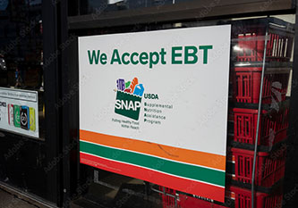

Supplemental Nutrition Assistance Program (SNAP):
The Supplemental Nutrition Assistance Program (formerly known as food stamps) is directed by the USDA. It offers a monthly allowance to families to spend at participating food retailers to feed their household. Eligibility for SNAP is determined by household income, and individuals must register with their state office. SNAP benefits are available on an Electronic Benefit Transfer card (EBT) that acts like a debit card. This money can be spent on fresh produce, meats, dairy products, breads/cereals, snack foods, and seeds/plants. Hot foods, alcohol, drugs, cleaning supplies, and pet food are not covered by SNAP.
Limitations:
- SNAP benefits are often not enough to cover the prices of a varied, robust diet
- Not available to felons or undocumented US residents
- Applying for SNAP has high stigma around it and can be a confusing process
- People lacking ability to space to prepare food can't by ready to eat food